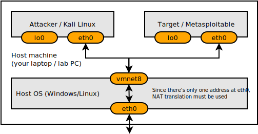

The course's labs involve two machines: the "attacker" and the "target". During the course, you will attempt various investigations and attacks on the target machine using the attacker machine. Both attacker and target are Linux-based virtual machines that will be run by VMWare and will form a private, virtual network on your (or the lab's) computer.
There are two possible ways to do the lab assignments for this course:
VMWare Player is a free version of VMWare virtualization software. It allows users to run multiple instances of x86 32 or 64-bit operating systems on a single physical computer.
VMWare Workstation (a paid, more advanced version of the Player) should already be installed on all machines of Lab 307.
VMWare Player is not available on Mac OSX. The corresponding Mac product is VMWare Fusion but it is not free (there is a 30-day trial). Parallels can convert VMWare images but version 7 will not run the attacker VM successfully. Unless you already have VMWare Fusion, or would like to acquire it for other reasons than this course, we would suggest you to do the labs in Lab 307.
VMWare Player 5 is available for Linux and should be installable either by downloading from VMWare or through your distribution's package manager. We may not be able to support you if there are any VMWare- or host-specific issues should you choose to use your personal Linux machine for labs.
Kali Linux is a distribution based on the Debian GNU/Linux distribution aimed at digital forensics and penetration testing users maintained and funded by Offensive Security. Kali provides users with easy access to a comprehensive and large collection of security-related tools ranging from port scanners to password crackers.
There are three ways to run the attacker VM. When in the lab, the professor will tell you whether to use a persistent or non-persistent image. On your machine, the image is always persistent, but if it gets messed up you can always delete it and copy it again from the reference on the course's network drive.
After starting the VM and waiting for it to boot, you can log in as root with password toor.
Note that, just like modern computers, these VMs should be shut down in an orderly fashion and not just powered off. To shut down the Kali VM, enter the command shutdown -h -P now from an open terminal.
Metasploitable is an intentionally vulnerable Linux virtual machine. This VM can be used to conduct security training, test security tools, and practice common penetration testing techniques. You should never run Metasploitable as a machine exposed directly to the Internet, as it will be eventually exploited and used for nefarious activities.
The same three ways apply for the target machine as well:
After starting the VM and waiting for it to boot, you can log in as msfadmin with password msfadmin.
Same to Kali, the Metasploit VM should be shut down in an orderly fashion and not just powered off. To shut down the Metasploit VM, enter the command sudo shutdown -P now from the console, after logging in. Once you see "System halted" in the terminal, it is safe to power down the VM.
Now that both virtual machines are set up and running, let's try a few basic tasks to see everything works and to get you comfortable with using the VMs.
For the questions below, please consider the following illustration of how the virtual machines and the host machine network connections are related:

Which command did you use?
This public repository does not include lab solutions. Please contact the authors if you wish to obtain the reference solutions. Note that the build system always generates both lab and solution files, even when the sources do not include any solution-related markup.
What is the IP address of Kali?
What is the IP address of Metasploitable?
Are the two machines in the same subnet? Explain.
Are the two machines globally addressable / reachable from the Internet? Explain.
Describe the method you have used.
What is the IP address of the host machine?
Which ports are open on Kali?
How many ports are open on Metasploitable?
Comparing the number of ports, what is your opinion on which machine is more secure?
Submit a console log or screenshot showing the FTP session on Kali.
Submit a console log or screenshot showing your actions.
Please submit a single PDF file containing answers to all questions. The file should be named with both students' last names (in alphabetical order) and "lab1" joined by underscores, for example: jones_smith_lab1.pdf.
To create a PDF on a lab machine, you can use the office suite (LibreOffice) word processor and File > Export to PDF.